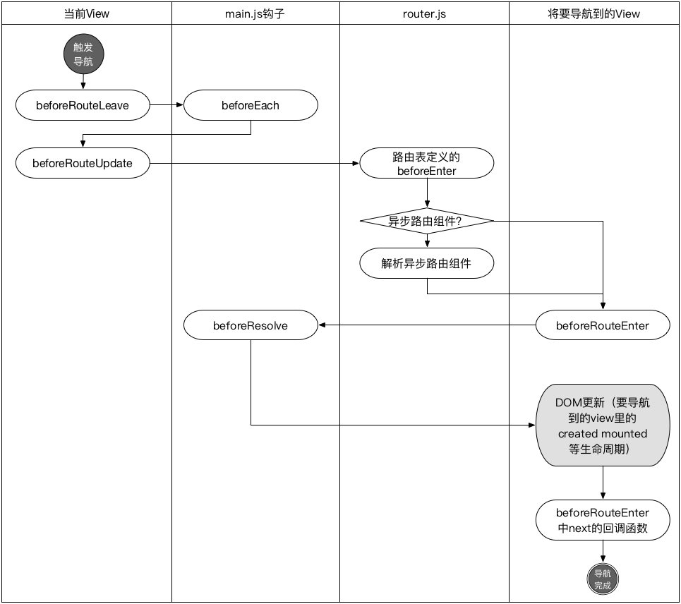

监听
全局事件/钩子 (导航守卫 Navigation Gurads)
可以在路由导航前后增加事件监测。例如如下情景就比较适合在导航前坚持：判断访问的页面是否需要登录，当前用户是否有权限等，如果不符合条件，则跳转到登录或无权限提示页面。
修改src/router.js文件，增加：
router.beforeEach((to, from, next) => {
//这里判断，如果继续处理，调用next()
//如果重定向，调用next({path: '/newurl'})
if(to.path !== '/'){
next({path: '/'})
return
}
next()
})
类似的事件还有：
- 全局
- beforeEach
- afterEach
单个路由的路由表定义 beforeEnter
{ path: '/foo', component: Foo, beforeEnter: (to, from, next) => { // ... } }- 在view页面定义的路由
- beforeRouteEnter
- beforeRouteUpdate
- beforeRouteLeave
事件执行顺序

History
hash模式与history模式，这两种模式功能没什么区别，只有URL的表现形式有差异。
hash模式的url:
http://localhost:8080/#/foo
history模式:
http://localhost:8080/foo
hash模式是靠改变页面中的hash来实现的。
history模式的url看上去更'正常'些，这也是有人喜欢这种模式的原因，但这种模式部署到生产环境上的时候，需要对web服务器进行下设置，把对应目录下的所有请求都重定向到index.html上去。
例如NGINX下要做类似这样的配置：
location / {
try_files $uri $uri/ /index.html;
}